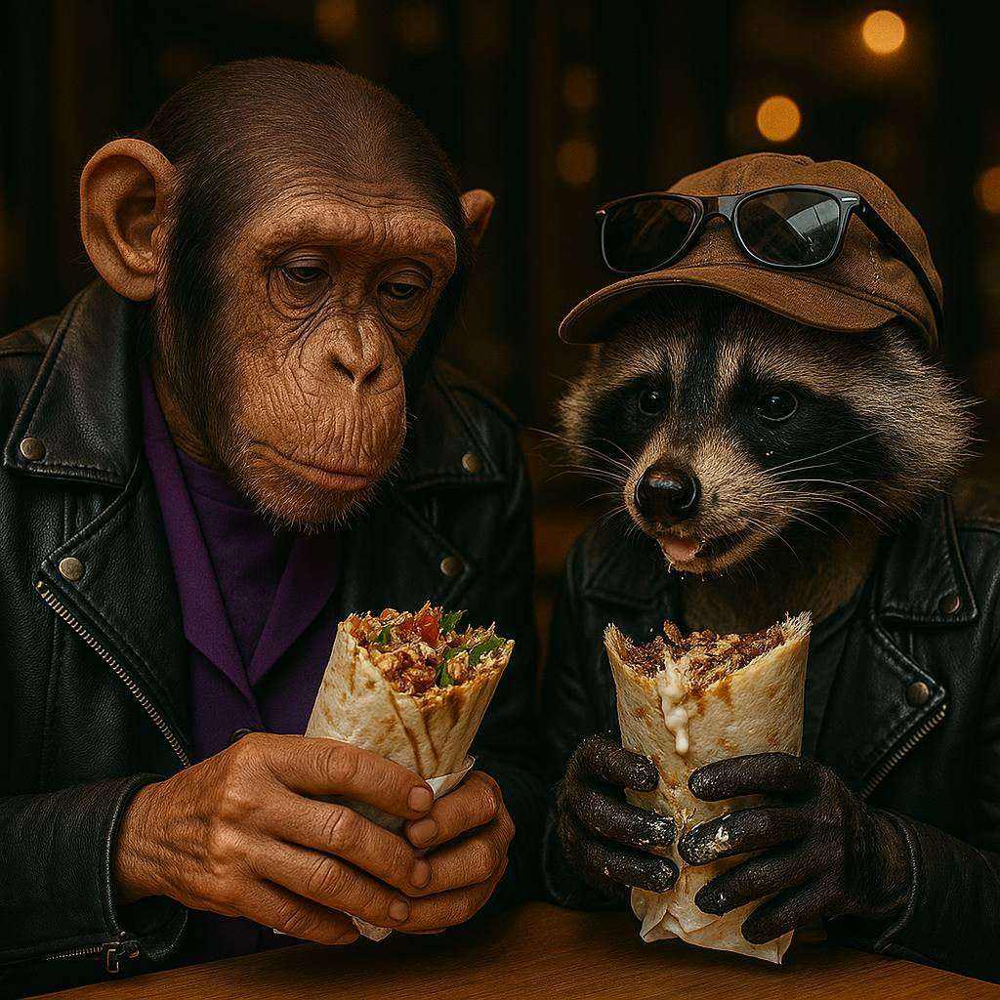

Наступного дня після розмови з Лєонідом, Алєговна вирішила, що треба зробити передишку й примусила себе хоча б на один день відволіктись від сумних думок та спогадів про Едіка…
Вспомнила про свого однокласника Віталіка - єнота, з яким вони дружать з дєцтва.
Віталік продавав на Троєщинському ринку сонцезахисні окуляри. Бізнес в цю пору року не йшов вопще, того врємєні в нього було дуже багато.
Вечором Алєговна і Віталік їли шаурму на Пєтровці і разгаварівали про жизнь:
- Поїду я, да, я всьотакі поїду до його матері. Мені треба довести це діло до кінця, - зрештою вирішила Жанна.
- Так а де вона живе ?, - жуючи капусту і вимазаний в соусі від шаурми, запитав Віталька.
- В Лубнах. Почті 200 кілометрів іхать. Бєнзіна на них не напасешся. Але мені вже Всьоравно. Я поїду.
- Угу, - далі жуючи пробубнів вічно голодний єнот.
- І все скажу йому в глаза !
- Угу, правільно, - доївши, промугикав Віталька.
Жанні в душу та шаурма не лізла, того єнот доїв і її.
Не почувши нічого путнього від Вітальки, як обично в принципі, Алєговна відвезла його додому в Бровари, а сама чекала наступного дня.
«Завтра я все йому скажу і все вияснимо» - з такими мислями Жанночка засинала в своїй квартирі в повному одіночєстві. За вікнами єбашило ППО.